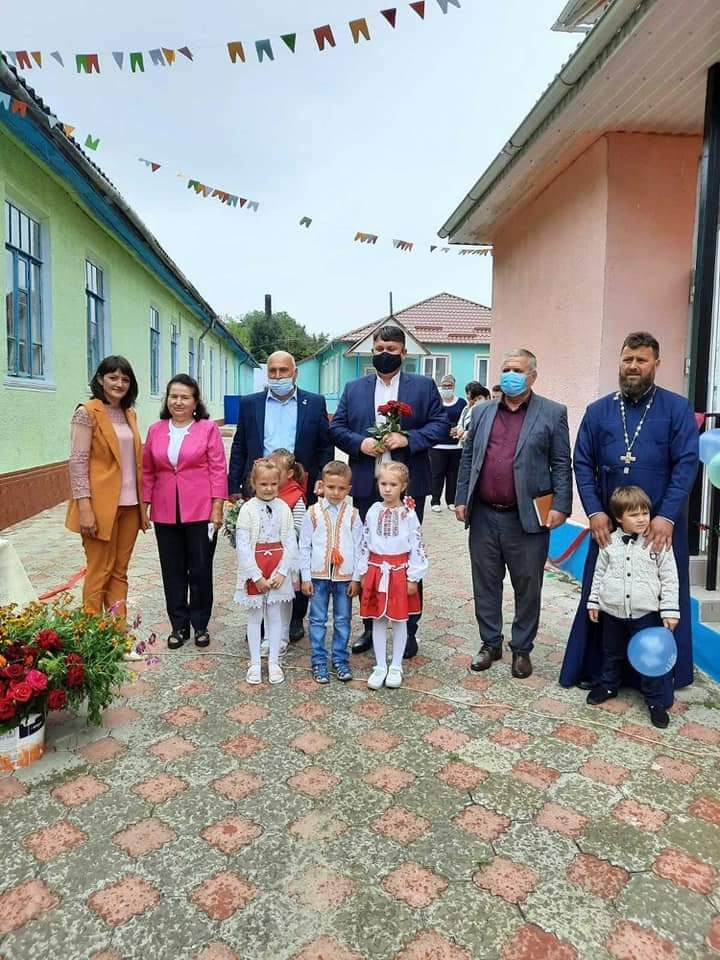
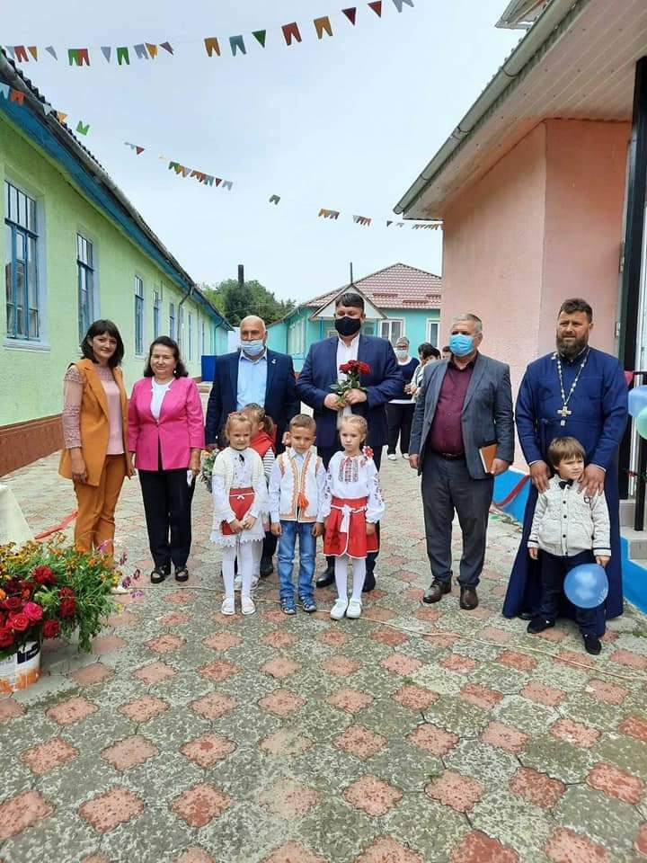

Instituțiile din localitate
Liceul Teoretic Visoca


Prima școală elementară bisericească a fost deschisă în 1862. La 29 octombrie 1874, s-a deschis o școală bisericească parohială de o singură treaptă, închisă în 1900. În 1902 începe construcția clădirii școlii de zemstvă, dată în folosință la 30 octombrie 1904. În 1910 se deschide a doua școală — cea bisericească parohială de două clase și un curs de 6 ani. În 1914-1915, aici învățau 110 copii. Predarea se făcea în limba rusă. În 1918, se trece la predarea în limba română. În 1930, în sat erau 30,3% știutori de carte. În 1940, a fost deschisă o școală primară sovietică. În 1941-1944, a funcționat și școala română de 7 ani, din 1944 — școala sovietică de 7 ani. În anul de studii 1948-1949, școala din Visoca capătă statut de școală medie de cultură generală. Ea cuprindea 378 de elevi, repartizați în 12 grupe. În același an de studii, 1948-1949, la Visoca funcționa și a doua școală — cea primară. Ea cuprindea 233 elevi în 7 complecte de clasă, avea 7 învățători. În 1970, se construiește clădirea-tip a școlii medii. În 1971, școala medie s-a transferat în clădirea nou construită. În clădirile vechi, în 1971, se deschide școala auxiliară pentru copii orfani și cu dizabilități, care a activat până în anul 2015. În anul 2007, școala medie din sat obține statut de Liceu Teoretic, care activează până în anul 2017, și datorită acestui fapt Visoca din nou a devenit un centru de atracție pentru satele din împrejurimi. La Liceul Teoretic Visoca în anul de studii 2017-2018 învățau 280 de elevi din satele Visoca, Teleșeuca, Niorcani, Tătărăuca Veche, Tătărăuca Nouă, Rudi, Dărcăuți, Mălcăuți, Bădiceni.
Casa de Cultură

Casa de cultură și-a început activitatea în anul 1975 și a activat până în anii 2000. După anii 2000, era nevoie de o reparație capitală. Abia în anii 2009-2012, conform unui proiect aprobat de către Guvernul RM, a fost efectuată o reparație capitală care a costat peste 3000000 lei. Din 2012, Casa de cultură și-a reluat activitatea. Activează următoarele cercuri: ”Cercul dramatic — copii”, ”Cercul dramatic — maturi”, Ansamblul Folcloric ”Visoceanca” — maturi, ”Ansamblul vocal — copii”. În incinta casei de cultură se află Biblioteca Publică Comunală, care dispune de 6731 exemplare de cărți, publicații periodice și alte documente.
Biserica
Biserica a existat încă prin 1772. În 1803, e atestată biserica ”Sfinții Arhangheli Mihail și Gavriil”, clădire din lemn, acoperită cu paie, dotată suficient cu veșminte, obiecte sacre și cărți necesare pentru slujbele religioase. În 1826, a fost construită clădirea din piatră a bisericii ”Sfinții Arhangheli Mihail și Gavriil”. În 1996-1998, biserica a fost reparată capital și sfințită de protoiereul Mihail Sîrbu, pe atunci protopop de Soroca, însoțit de un sobor de preoți. În satul Visoca biserica a activat fără întrerupere, chiar și pe timpurile comuniste. Visocenii au luptat ca lăcașul sfânt să nu fie închis.
Grădinișa de copii Prichindel
 

Grădiniţa din satul Visoca, raionul Soroca, şi-a redeschis larg uşile pentru picii din localitate. Instituţia preşcolară nu a funcţionat mult timp din cauza stării sale avansate de degradare. Însă a fost reconstruită cu sustinerea financiară a Guvernului României, care a alocat pentru lucrările de renovare 1 mln de lei. Datorită sprijinului financiar oferit de România, grădiniţa "Prichindel" din satul Visoca funcţionează din nou după o pauză de 27 de ani. Pentru ca picii să poate frecventa grădiniţa, au fost făcute reparaţii capitale. Vestea redeschiderii instituţiei a fost ca o gură de oxigen pentru părinţi, întrucât erau nevoiţi să-şi ia copiii la serviciu sau să-i lase fără supraveghere acasă. Acum însă au răsuflat uşurat, după ce au aflat că de acum încolo, copiii lor vor fi în siguranţă.